News
Welcome to UNITES Lab at UNC Chapel Hill
- About: The UNITES Lab focuses on building accurate, trustworthy, and efficient machine learning systems for AI and scientific applications.
- Director: Dr. Tianlong Chen, Assistant Professor of Computer Science at UNC Chapel Hill
- Research Areas: Efficient Deep Learning, Trustworthy AI, AI for Science, Large Language Models, Computer Vision
- We are actively recruiting PhD students, postdocs, and interns. Interested candidates are strongly encouraged to contact Dr. Chen by email.
[Sep. 2025]
- Dr. Chen received the Amazon Research Award for Spring 2025
[Aug. 2025]
- Dr. Chen received a gift funding from Cisco Research
- UNITES welcomes 11 new members (8 Ph.D. + 2 Postdoc + 1 M.S.): Mohan Zhang (USTC), Yuhang Cheng (Wuhan University), Kangqi Ni (RICE), Laura Yao (CMU), Yu-Chao Huang (National Taiwan University), Zijie Liu (WashU), Zhuoxuan Zhang (Brown), Shuqing Luo (PKU), Jinhao Duan (Drexel), Gengwei Zhang (UTS), and Zhen Xu (Zhejiang University)
- 9 EMNLP'25 (6 Main + 3 Findings) accepted - Next Agent Prediction, Embodied Reward Model, Bit Flip Error Resilience in LLMs, Instruction-Driven Routing for MoE, Adaptive Resolution for VLLMs, MedHallucinations Benchmark, and more
[Jul. 2025]
- 1 COLM'25 accepted - Multi-model Safety Alignment
[Jun. 2025]
- NeurIPS'25 Workshop accepted - Lock-LLM. Call for Papers!
[May 2025]
- 10 ACL'25 (5 Main + 5 Findings) accepted - Long-term Personalized Dialogue Agents (Integrated in Google Gemini), Indirect Attack in Multi-Agent Systems, UQ in LLM, Efficient LLM Recommender, Multi-Agent System for Content Analysis, Multi-omics Foundation Model, and more
- 1 JBI'25 accepted - Personalized Graph Learning on EHRs
- 2 KDD'25 accepted - Graph Learning w. Missing Features + Trustworthy LLM Agent (Survey + Tutorial)
- 4 ICML'25 accepted - Communication Topology Designs in Multi-Agent System (Spotlight), New MoE Parallelism, Adaptive Multimodal Learning, Interpretable MoE
- Dr. Chen is honored to be selected to attend the 12th Heidelberg Laureate Forum (HLF) 2025
[Apr. 2025]
- Dr. Chen received the Amazon Research Award for Fall 2024
- Congratulations to Mohan Zhang, Pingzhi Li, and collaborators for winning the low-resource methods for NLP SAC Award at NAACL 2025
[Mar. 2025]
- Dr. Chen received the NAIRR Pilot Award in the field of Artificial Intelligence and Intelligent Systems
[Jan. 2025]
- 4 NAACL'25 papers accepted on MoE Efficiency, LLM Alignment, LLM-Guided Conversation, and Jailbreak Defense
- 6 ICLR'25 papers accepted including work on LLM Model Patches, Multi-Agent Communication, and Multimodal Learning
- Dr. Chen received the 2025 CPAL Rising Star Award and 2025 KAUST Rising Stars Award
- Dr. Chen received the AAAI New Faculty Highlights 2025
- Dr. Chen received a gift funding from Cisco Research
[Dec. 2024]
- Congratulations to Xinyu Zhao and collaborators for winning the Best Demo Paper Award at GenAI4Health at NeurIPS 2024
- 6 AAAI'25 papers accepted on Metacognitive AI, Visual Prompting, Brain Pathway Learning, and Uncertainty Quantification
- Two ICLR'25 Workshops and One PAKDD'25 Workshop accepted on Sparsity in LLM and Scalable Optimization
[Nov. 2024]
- One KDD'25 paper accepted on C2C Recommendation Datasets (ADS Track)
[Oct. 2024]
- Four NeurIPS'24 papers accepted including work on Flexible Modality Learning (Spotlight), Game-Theoretic Evaluation for LLM Reasoning, and Graph Learning
[Sep. 2024]
- Three EMNLP'24 papers accepted on LLM RAG Vulnerabilities, FFN-SkipLLM, and Calibration LLM Pruning
- Two EMNLP'24 Findings papers accepted on Synergized KG and LLM for AD and Cross-Lingual Multi-Hop Knowledge Editing
[Aug. 2024]
- UNITES Lab welcomes six new Ph.D. students: Sukwon Yun (KAIST), Xinyu Zhao (Peking University), Pingzhi Li (USTC), Mufan Qiu (USTC), Huaizhi Qu (USTC), and Rana Muhammad Shahroz Khan (Vanderbilt)
[Jul. 2024]
- Two ECCV'24 papers accepted on Multiplexed Immunofluorescence Image Analysis and Facial Affective Behavior Analysis
- Congratulations to Sukwon Yun for his first 1st author ECCV paper
- Dr. Chen started his Assistant Professor position at CS@UNC Chapel Hill
[May 2024]
- Six ICML'24 papers accepted on ZO LLM Tuning, Graph Sparsification, Reliable SMoE, Biological-informed Protein Representation Learning, Sparse Cocktail, and TrustLLM
- One Bioinformatics paper accepted on scRNA Imputation via Bi-level Feature Propagation
- Tutorial on "Mixture-of-Experts in the Era of LLMs: A New Odyssey" accepted by ICML'24
[Mar. 2024]
- One NAACL'24 paper accepted on Multiple LLM Agents Gaming
- Two CVPR'24 papers accepted on Diffusion Quantization and Molecular Data Programming
[Feb. 2024]
- Two ICLR'24 papers accepted including SMoE Merging (Spotlight) and Multilingual SMoE
- Congratulations to Pingzhi Li and Xinyu Zhao for their first 1st author ICLR papers
- Tutorial on "Zeroth-Order Machine Learning" accepted by AAAI'24 and ICASSP'24
- One EACL'24 paper accepted on LLM + Knowledge Graph
 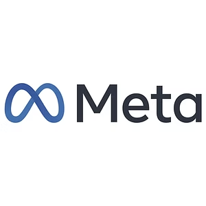
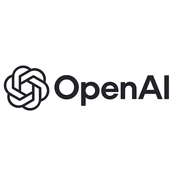
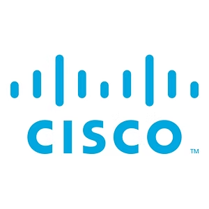
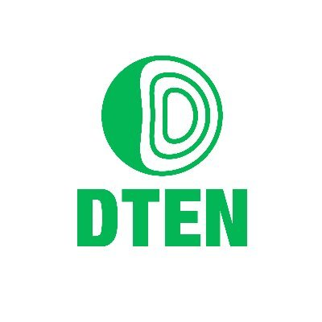
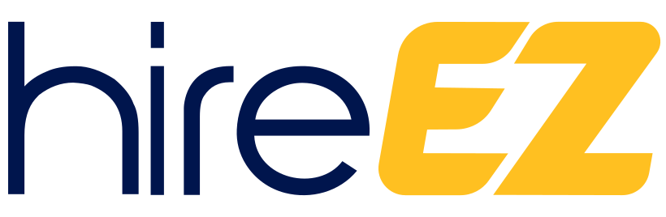
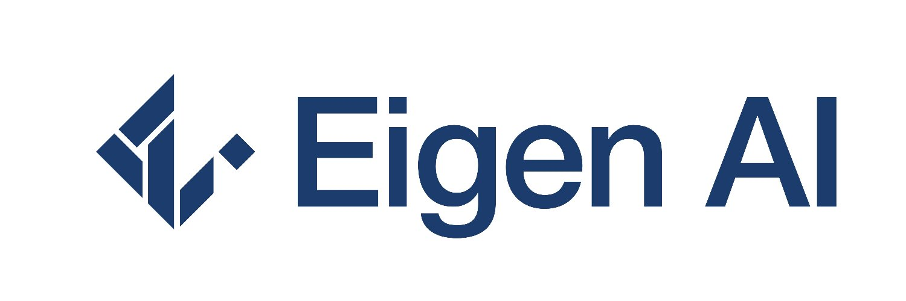
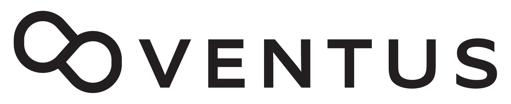
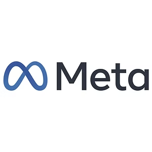
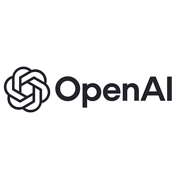
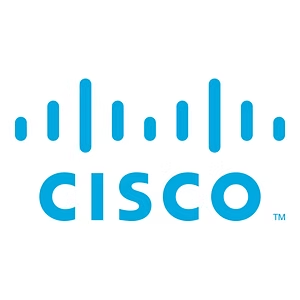
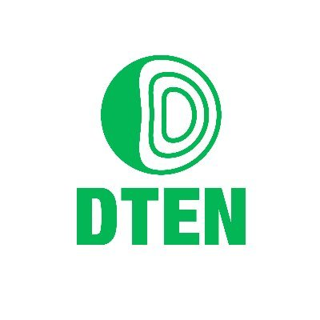
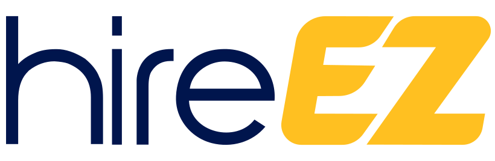
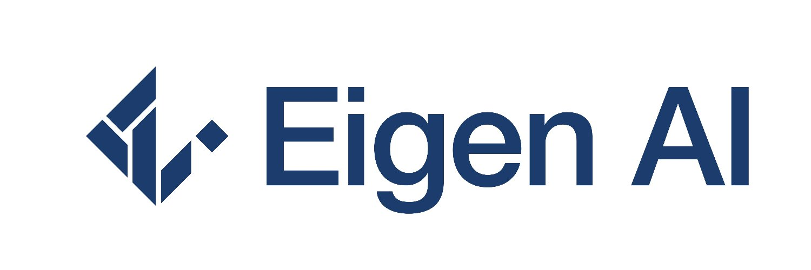
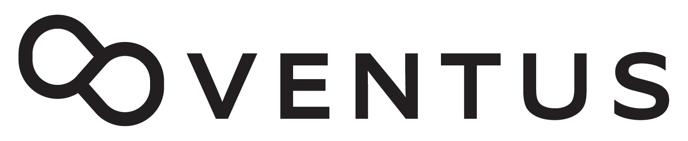